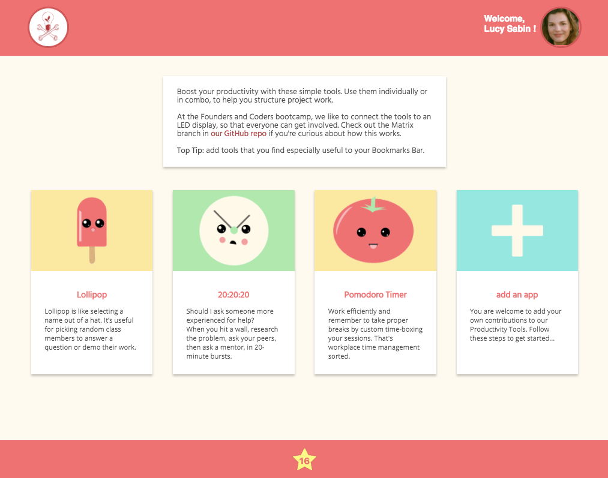

Productivity Tools: creating an interactive LED display for a coding bootcamp.


Client
Founders and Coders (in house)
Brief
Develop an interactive LED display for the coding bootcamp learning space.
Deliverables
An LED display hooked up to a front end with productivity tools, such as pomodoro timers.
Description
Along with a small team at Founders and Coders, I designed and helped to develop an interactive LED display that hooks up to a dedicated website (see below).
The Productivity Tools website has activity timers and randomised name selecting for use within the coding classroom.
Having the LED display helped to make Productivity Tools an interactive meeting point that encouraged collaborative working and healthy break times during busy days.
Feedback
Students at Founders and Coders started using the display for timing presentations, selecting people to present their code, structuring exercises, and posting motivational (or funny) messages to the rest of the group.
"It helps to diffuse the intensity of the learning environment", said one coder.
I used: pencil and paper, HTML5, CSS, JavaScript, matrix.js, Raspberry Pi, node.js, handlebars.js, and some trusty pliers!